<!doctype html>
<html lang="ro">
<head>
<meta charset="utf-8">
<meta name="viewport" content="width=device-width, initial-scale=1, viewport-fit=cover">
<title>Misiunea Analist</title>
<meta name="description" content="Excel: interfața și registrul, editare, tipuri de date, formatare, formule adevărate, funcții, IF, sortare și grafice.">
<link rel="preconnect" href="https://fonts.googleapis.com">
<link rel="preconnect" href="https://fonts.gstatic.com" crossorigin>
<link rel="stylesheet" href="https://fonts.googleapis.com/css2?family=Archivo:wdth,wght@62..125,100..900&family=Source+Sans+3:ital,wght@0,400;0,600;0,700;1,400&family=IBM+Plex+Mono:wght@500;600&display=swap">
<link rel="stylesheet" href="../_motor/motor.css">
<style>
:root{
  --desk:#EDF0ED; --paper:#FFFFFF; --paper2:#EEF2EE; --line:#D3D9D3;
  --ink:#18221B; --ink2:#59655C; --accent:#1B7443; --accentInk:#FFFFFF; --sel:#D9EEE1;
  --mark:#FFE36B; --markInk:#18221B; --ok:#177245; --okbg:#E1F3E7; --bad:#C63A33; --badbg:#FAE6E4;
  --fd:"Archivo","Segoe UI",system-ui,sans-serif; --fb:"Source Sans 3","Segoe UI",system-ui,sans-serif; --fm:"IBM Plex Mono",Consolas,monospace;
}
@media (prefers-color-scheme:dark){:root:not([data-theme="light"]){
  --desk:#0F1411; --paper:#18201B; --paper2:#222C25; --line:#2F3B33;
  --ink:#E4EBE6; --ink2:#9AA89F; --accent:#5CCB8E; --accentInk:#0F1411; --sel:#1E4430;
  --mark:#F2D24E; --markInk:#18221B; --ok:#5CCB8E; --okbg:#15301F; --bad:#FF7B72; --badbg:#3A1E1D;
}}
:root[data-theme="dark"]{
  --desk:#0F1411; --paper:#18201B; --paper2:#222C25; --line:#2F3B33;
  --ink:#E4EBE6; --ink2:#9AA89F; --accent:#5CCB8E; --accentInk:#0F1411; --sel:#1E4430;
  --mark:#F2D24E; --markInk:#18221B; --ok:#5CCB8E; --okbg:#15301F; --bad:#FF7B72; --badbg:#3A1E1D;
}
/* tema jocului: capul de coloane al foii de calcul și un titlu lat, ca pe o foaie Excel */
.banda{display:grid;grid-template-columns:repeat(8,1fr);font-family:var(--fm);font-size:.7rem;color:var(--ink2)}
.banda span{text-align:center;padding:3px 0;border-left:1px solid var(--line)}
.banda span:first-child{border-left:0}
h1,h2{font-stretch:115%}
h1 .eq{color:var(--accent);font-weight:500;font-stretch:80%}
</style>
</head>
<body>
<script src="../_motor/motor.js"></script>
<script src="../_motor/tip-foaie.js"></script>
<script>
/* Tipul de întrebare „formatare”: un tabel brut, pe care elevul îl formatează ca în Excel.
   Gestul: întâi selectezi (clic pe un colț, apoi pe colțul opus; sau clic pe litera coloanei / numărul rândului), apoi apeși butonul.
   Întrebare: {t:'formatare', q, cells:{A1:'Elev',B2:9,...}, cols, rows, targets:{umplere:'A1:C1', centru:'B2:C4', borduri:'A1:C4'}, why}
   Verificare pe comportament: pentru fiecare formatare, mulțimea celulelor formatate trebuie să fie EXACT zona cerută
   (prea puțin = nu ai selectat tot; prea mult = ai selectat mai mult decât trebuia). */
const JocFormatare=(function(){
  const L=i=>String.fromCharCode(65+i);
  const NUME={umplere:'culoarea de umplere',centru:'alinierea la centru',borduri:'bordurile'};
  const BTN=[['centru','Aliniere la centru'],['borduri','Borduri'],['umplere','Culoare de umplere'],['sterge','Fără formatare']];
  const CSS=`.fmt-bar{display:flex;flex-wrap:wrap;gap:6px;margin-bottom:6px}
.fmt-bar button{font-size:.86rem;padding:6px 10px;border:1px solid var(--line);border-radius:6px;background:var(--paper2);color:var(--ink)}
.fmt-bar button[data-f="sterge"]{background:transparent;color:var(--ink2)}
.g.fmt th>button{display:block;width:100%;border:0;background:none;color:inherit;font:inherit;padding:4px 2px;min-height:28px}
.g.fmt td>button{text-align:left}
.g.fmt td.c-centru>button{text-align:center}
.g.fmt td.c-num:not(.c-centru)>button{text-align:right}
.g.fmt td.c-umplere>button{background:color-mix(in srgb,var(--accent) 26%,transparent)}
.g.fmt td.c-borduri{border:2px solid var(--ink)}
.g.fmt td.c-sel>button{box-shadow:inset 0 0 0 2px var(--accent)}
.fmt-sel{margin:0 0 6px}`;
  function render(Q,body,api){
    if(!document.getElementById('tip-formatare-css')){const st=document.createElement('style');st.id='tip-formatare-css';st.textContent=CSS;document.head.appendChild(st)}
    const S={umplere:new Set(),centru:new Set(),borduri:new Set()};let a=null,b=null;
    const all=[];for(let r=1;r<=Q.rows;r++)for(let c=0;c<Q.cols;c++)all.push(L(c)+r);
    const sel=()=>!a?[]:(b?api.expandRange(a,b):[a]);
    const selLabel=()=>{const s=sel();return !s.length?'nimic':(s.length===1?s[0]:s[0]+':'+s[s.length-1])};
    function draw(){
      const s=new Set(sel());
      let h=`<div class="fmt-bar" role="group" aria-label="Butoane de formatare">${BTN.map(([k,t])=>`<button type="button" data-f="${k}">${t}</button>`).join('')}</div>
        <p class="hint fmt-sel">Selecția ta: <strong class="code">${selLabel()}</strong></p>
        <div class="gridwrap"><table class="g fmt"><thead><tr><th></th>`;
      for(let c=0;c<Q.cols;c++)h+=`<th><button type="button" data-col="${L(c)}" aria-label="Selectează coloana ${L(c)}">${L(c)}</button></th>`;
      h+='</tr></thead><tbody>';
      for(let r=1;r<=Q.rows;r++){
        h+=`<tr><th><button type="button" data-row="${r}" aria-label="Selectează rândul ${r}">${r}</button></th>`;
        for(let c=0;c<Q.cols;c++){const ad=L(c)+r,v=Q.cells[ad];
          const cls=['umplere','centru','borduri'].filter(k=>S[k].has(ad)).map(k=>'c-'+k).concat(typeof v==='number'?['c-num']:[],s.has(ad)?['c-sel']:[]).join(' ');
          h+=`<td class="${cls}"><button type="button" data-a="${ad}" aria-label="Celula ${ad}">${api.esc(v==null?'':String(v))}</button></td>`}
        h+='</tr>'}
      body.innerHTML=h+`</tbody></table></div>
        <p class="hint" style="margin:6px 0 0">Primul clic = un colț, al doilea = colțul opus. Clic pe literă sau pe număr = toată coloana sau tot rândul. Apoi apasă butonul formatării.</p>`;
      body.querySelectorAll('.g td>button').forEach(x=>x.onclick=()=>{if(api.done())return;const ad=x.dataset.a;if(!a||b){a=ad;b=null}else b=ad;draw()});
      body.querySelectorAll('.g th>button[data-col]').forEach(x=>x.onclick=()=>{if(api.done())return;a=x.dataset.col+'1';b=x.dataset.col+Q.rows;draw()});
      body.querySelectorAll('.g th>button[data-row]').forEach(x=>x.onclick=()=>{if(api.done())return;a='A'+x.dataset.row;b=L(Q.cols-1)+x.dataset.row;draw()});
      body.querySelectorAll('.fmt-bar button').forEach(x=>x.onclick=()=>{if(api.done())return;const f=x.dataset.f,cur=sel();
        if(!cur.length){api.feedback('bad','Întâi selectezi celulele, apoi apeși butonul.');return}
        if(f==='sterge')Object.values(S).forEach(set=>cur.forEach(c=>set.delete(c)));else cur.forEach(c=>S[f].add(c));
        draw()});
    }
    function problems(){
      const out=[];
      for(const [k,zona] of Object.entries(Q.targets)){
        const [p,q]=zona.split(':'),want=new Set(api.expandRange(p,q||p));
        const lipsa=[...want].filter(c=>!S[k].has(c)),extra=[...S[k]].filter(c=>!want.has(c));
        if(lipsa.length)out.push(`Zona ${zona} nu are peste tot ${NUME[k]} (lipsește de exemplu în ${lipsa[0]}).`);
        else if(extra.length)out.push(`Ai pus ${NUME[k]} și în afara zonei ${zona} (de exemplu în ${extra[0]}). Selectează doar ce se cere.`);
      }
      return out;
    }
    draw();
    const nav=api.checkButton(()=>{
      const pr=problems();
      if(!pr.length){nav.innerHTML='';api.resolve(true)}
      else{api.resolve(false,api.esc(pr.slice(0,2).join(' '))+(pr.length>2?` (încă ${pr.length-2})`:''));
        api.revealButton(()=>{Object.keys(S).forEach(k=>S[k].clear());for(const [k,z] of Object.entries(Q.targets)){const [p,q]=z.split(':');api.expandRange(p,q||p).forEach(c=>S[k].add(c))}a=b=null;draw();nav.innerHTML='';api.giveUp('formatarea corectă e acum în tabel. Uită-te ce zonă are fiecare formatare.')})}
    });
  }
  /* gestul real, cu clicuri: selectezi zona, apoi apeși butonul */
  function aplica(body,zona,f){
    const [p,q]=zona.split(':');
    body.querySelector(`.g td>button[data-a="${p}"]`).click();
    body.querySelector(`.g td>button[data-a="${q||p}"]`).click();
    body.querySelector(`.fmt-bar button[data-f="${f}"]`).click();
  }
  function rezolva(Q,body){for(const [k,z] of Object.entries(Q.targets))aplica(body,z,k)}
  /* greșeala tipică: formatezi tot tabelul dintr-o dată (umplere peste tot, borduri peste tot) și uiți alinierea */
  function gresit(Q,body){const tot='A1:'+L(Q.cols-1)+Q.rows;aplica(body,tot,'umplere');aplica(body,tot,'borduri')}
  return {render,rezolva,gresit};
})();

/* conținuturile programei (OMEN 3393/2017), textul exact din curriculum.json */
const P={
  interfata:'Elemente de interfaţă ale unei aplicaţii de calcul tabelar',
  structura:'Structura unui registru de calcul (foaie de calcul, coloană, rând, celulă, adresă de celulă)',
  registru:'Operații cu un registru de calcul (deschidere, închidere, salvare, creare)',
  foi:'Operații cu foi de calcul (accesare, redenumire)',
  editare:'Operaţii de editare (selectare, copiere, mutare, ştergere)',
  randuri:'Operații de formatare a rândurilor/coloanelor',
  celule:'Operații de formatare a celulelor (aliniere conținut, borduri, culori de umplere, stiluri predefinite)',
  tipuri:'Tipuri de date: numeric, text, dată calendaristică',
  sortare:'Sortarea crescătoare/descrescătoare a datelor dintr-un tabel după unul sau mai multe criterii',
  formule:'Formule de calcul care utilizează operatori aritmetici (+, -,*, /)',
  functii:'Funcții specifice aplicaţiei de calcul tabelar pentru sumă, maxim, minim, medie aritmetică şi decizie',
  grafice:'Grafice: tipuri de grafice',
  serii:'Serii de date'
};

const LEVELS=[
{t:'Interfața, registrul și foile',lectii:[2,3],continuturi:[P.interfata,P.structura,P.registru,P.foi],text:`
<p><strong>Excel</strong> e o aplicație de <mark>calcul tabelar</mark>. Fișierul lui e un <mark>registru</mark> (.xlsx), cu una sau mai multe <strong>foi de calcul</strong>.</p>
<p>Sus e <mark>panglica</mark>, cu file ca Pornire (Home), Inserare (Insert), Formule (Formulas), Date (Data). Sub ea, în stânga, <strong>caseta de nume</strong> (Name Box) arată adresa celulei alese. Lângă ea e <strong>bara de formule</strong> (Formula Bar), cu ce e scris în celulă.</p>
<p>Foaia e o grilă: coloane cu litere, rânduri cu numere. La întâlnirea lor stă o <mark>celulă</mark>, cu <strong>adresa</strong> literă + număr: <code>B3</code>.</p>
<figure class="captura"><a href="../excel-viii/img/interfata.webp" target="_blank">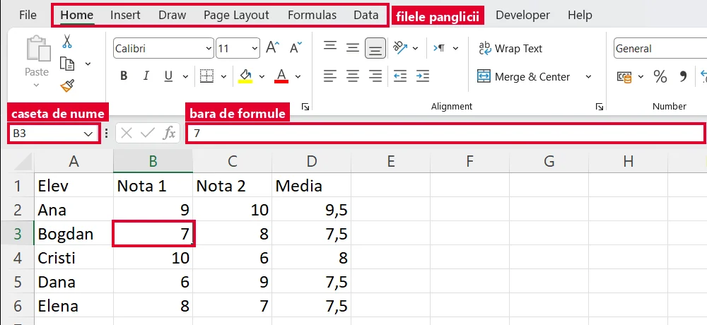</a>
<figcaption>Excel în engleză. Sus, filele panglicii: Pornire (Home), Inserare (Insert), Formule (Formulas), Date (Data). Celula aleasă e <b>B3</b>: caseta de nume (Name Box) arată B3, iar bara de formule arată ce e scris în ea, 7.</figcaption></figure>
<p>În Excel instalat pe calculator: <kbd>Ctrl</kbd>+<kbd>N</kbd> creează un registru, <kbd>Ctrl</kbd>+<kbd>O</kbd> deschide unul, <kbd>Ctrl</kbd>+<kbd>S</kbd> îl salvează. Închizi abia după salvare.</p>
<p>Filele foilor sunt jos. Clic pe filă = treci pe acea foaie. Dublu-clic pe ea = o <strong>redenumești</strong>.</p>
<figure class="captura"><a href="../excel-viii/img/file-foi.webp" target="_blank"></a>
<figcaption>Jos, filele foilor: <b>Note</b> (foaia deschisă acum) și <b>Absente</b>. Butonul <b>+</b> adaugă o foaie nouă.</figcaption></figure>`,
qs:[
 {t:'choice',q:'Unde vezi adresa celulei în care ești?',o:['În caseta de nume','Pe fila foii, jos','În panglică, pe fila Date','În titlul ferestrei'],ok:0,why:'Caseta de nume, în stânga barei de formule, arată mereu adresa celulei alese.'},
 {t:'pick',q:'Apasă pe celula <code>C5</code>, apoi verifică.',cols:5,rows:6,ans:'C5',why:'Întâi coloana (litera C), apoi rândul (5).'},
 {t:'match',q:'Potrivește fiecare parte cu rolul ei.',pairs:[['Registrul','Fișierul Excel, salvat ca .xlsx'],['Panglica','Filele cu butoane, sus'],['Bara de formule','Arată ce e scris în celula aleasă'],['Fila unei foi','Clic pe ea și treci pe acea foaie']],why:'Registrul e fișierul. Panglica și bara de formule sunt sus, iar filele foilor sunt jos.'},
 {t:'choice',q:'Vrei să continui catalogul salvat ieri. Ce apeși?',o:['Ctrl+O','Ctrl+N','Ctrl+S','Ctrl+Z'],ok:0,why:'Ctrl+O deschide un registru existent. Ctrl+N ar crea unul nou, gol.'},
 {t:'choice',q:'Închizi registrul, iar Excel te întreabă ce faci cu modificările. Ce alegi, ca să nu pierzi munca?',o:['Salvezi modificările','Nu salvezi nimic','Deschizi alt registru','Creezi o foaie nouă'],ok:0,why:'Fără salvare, tot ce ai lucrat de la ultima salvare se pierde la închidere.'},
 {t:'choice',q:'Vrei ca foaia să se numească „Note”. Ce faci?',o:['Dublu-clic pe fila foii, jos','Scrii „Note” în celula A1','Salvare ca…','Ștergi foaia și faci alta'],ok:0,why:'Numele foii se schimbă din fila ei. Merge și clic dreapta pe filă, apoi comanda de redenumire.'}
]},
{t:'Selectare, copiere, mutare, ștergere',lectii:[4],continuturi:[P.editare,P.structura],text:`
<p>O <mark>zonă</mark> de celule se scrie cu două puncte între colțuri: <code>B2:D4</code>. O selectezi cu clic și tragere. Clic pe <strong>litera</strong> unei coloane selectează coloana, clic pe <strong>numărul</strong> unui rând selectează rândul.</p>
<p>Cu ce ai selectat poți face trei lucruri:</p>
<ul>
<li><mark>copiere</mark>: <kbd>Ctrl</kbd>+<kbd>C</kbd>, clic în locul nou, <kbd>Ctrl</kbd>+<kbd>V</kbd>. Originalul rămâne;</li>
<li><mark>mutare</mark>: <kbd>Ctrl</kbd>+<kbd>X</kbd>, clic în locul nou, <kbd>Ctrl</kbd>+<kbd>V</kbd>. Originalul dispare de unde era;</li>
<li><mark>ștergere</mark>: <kbd>Delete</kbd> golește celulele, dar ele rămân în foaie.</li>
</ul>
<p>În jurul celulelor copiate apare o margine animată. Dispare cu <kbd>Esc</kbd>. Ai greșit? <kbd>Ctrl</kbd>+<kbd>Z</kbd> anulează.</p>
<figure class="captura"><a href="../excel-viii/img/zona-copiata.webp" target="_blank">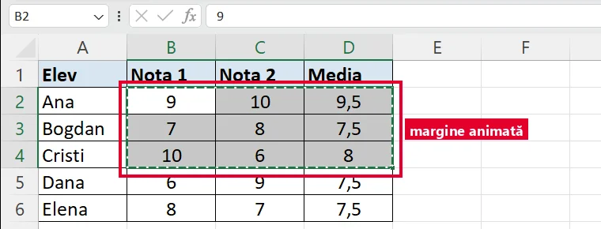</a>
<figcaption>Zona <code>B2:D4</code> (3 coloane × 3 rânduri) după <kbd>Ctrl</kbd>+<kbd>C</kbd>: marginea punctată din jur „se mișcă” pe ecran. Caseta de nume arată prima celulă, B2.</figcaption></figure>`,
qs:[
 {t:'choice',q:'Vrei ca tabelul să nu mai stea în A1:C5, ci în E1:G5. Cu ce începi, după ce l-ai selectat?',o:['Ctrl+X','Ctrl+C','Delete','Ctrl+Z'],ok:0,why:'Mutarea începe cu Ctrl+X. Cu Ctrl+C l-ai avea de două ori, iar Delete doar îl golește.'},
 {t:'pick',q:'Selectează zona <code>B2:C4</code>: apasă pe un colț, apoi pe colțul opus.',cols:5,rows:6,range:true,ans:'B2:C4',why:'B2:C4 are colțurile B2 (stânga-sus) și C4 (dreapta-jos).'},
 {t:'choice',q:'Câte celule are zona <code>B2:D4</code>?',o:['6','8','9','12'],ok:2,why:'3 coloane (B, C, D) × 3 rânduri (2, 3, 4) = 9 celule.'},
 {t:'match',q:'Potrivește tasta cu ce face.',pairs:[['Ctrl+C','Copiază selecția'],['Ctrl+X','Decupează selecția, ca s-o muți'],['Ctrl+V','Lipește în locul nou'],['Delete','Golește celulele selectate'],['Ctrl+Z','Anulează ultima operație']],why:'C, X și V stau alături pe tastatură: copiez, decupez, lipesc.'},
 {t:'tf',q:'După <kbd>Delete</kbd>, celulele dispar din foaie, iar cele de dedesubt urcă în locul lor.',ok:false,why:'Fals. Delete doar golește conținutul. Celulele rămân la locul lor, goale.'}
]},
{t:'Tipuri de date',lectii:[5],continuturi:[P.tipuri],text:`
<p>În celule scrii trei tipuri de date: <mark>numere</mark> (12, 250), <mark>text</mark> (Ana, clasa a VIII-a) și <mark>date calendaristice</mark> (de exemplu 15.09.2026, dacă așa scrie data calculatorul tău).</p>
<p>Cum le deosebești dintr-o privire? Dacă nu schimbi tu alinierea, Excel pune <strong>numerele și datele la dreapta</strong>, iar <strong>textul la stânga</strong>.</p>
<p>Un număr aliniat la stânga e un semn de alarmă: probabil Excel îl vede ca <strong>text</strong> și nu va calcula cu el.</p>
<p>O celulă cu număr care arată <code>#####</code> nu e stricată: <strong>coloana e prea îngustă</strong>. O lărgești și numărul apare.</p>
<figure class="captura"><a href="../excel-viii/img/tipuri-date.webp" target="_blank">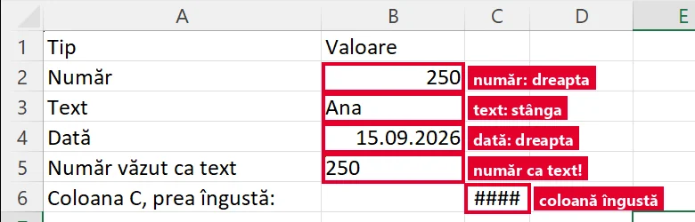</a>
<figcaption>Numărul și data stau la dreapta, textul la stânga. Rândul 5: „250” lipit la stânga, cu un triunghi verde în colțul din stânga-sus, e văzut ca <b>text</b>. În coloana C, prea îngustă, numărul 12345678 apare ca <code>#####</code>.</figcaption></figure>`,
qs:[
 {t:'classify',q:'Ce tip de date e fiecare valoare?',cats:['Număr','Text','Dată'],items:[['250',0],['Ana',1],['15.09.2026',2],['7B',1],['-4',0],['3 mere',1]],why:'Tot ce conține litere e text. „7B” și „3 mere” sunt text, deși încep cu o cifră.'},
 {t:'choice',q:'Scrii <code>12</code> în A1 și <code>Ana</code> în A2, fără nicio formatare. Cum apar?',o:['12 la dreapta, Ana la stânga','Amândouă la stânga','Amândouă centrate','12 la stânga, Ana la dreapta'],ok:0,why:'Numerele se aliniază la dreapta, textul la stânga.'},
 {t:'choice',q:'O celulă cu un număr mare arată <code>#####</code>. Ce faci?',o:['Scrii numărul din nou','Lărgești coloana','Pui numărul pe aldin','Închizi registrul'],ok:1,why:'##### înseamnă doar că numărul nu încape în lățimea coloanei.'},
 {t:'tf',q:'Un număr aliniat la stânga poate fi semn că Excel îl vede ca text.',ok:true,why:'Adevărat. Cu un astfel de „număr” formulele nu vor calcula corect.'}
]},
{t:'Formatarea rândurilor, coloanelor și celulelor',lectii:[6],continuturi:[P.randuri,P.celule],text:`
<p>Un tabel brut devine ușor de citit prin <mark>formatare</mark>. Regula: <strong>întâi selectezi, apoi formatezi</strong>.</p>
<p><strong>Rânduri și coloane.</strong> Lățimea unei coloane o schimbi trăgând marginea din dreapta literei ei. Înălțimea unui rând o schimbi trăgând marginea de sub numărul lui. <strong>Dublu-clic</strong> pe margine o potrivește după conținut.</p>
<p><strong>Celule.</strong> Pe fila <strong>Pornire</strong> (Home) găsești:</p>
<ul>
<li><mark>alinierea</mark> conținutului: stânga, centru, dreapta (grupul Aliniere (Alignment));</li>
<li><mark>bordurile</mark> (Borders), liniile din jurul celulelor;</li>
<li><mark>culoarea de umplere</mark> (Fill Color, găleata), fundalul celulei;</li>
<li><mark>stilurile predefinite</mark> (Stiluri de celule, în engleză Cell Styles), formatări gata făcute, de exemplu pentru capul de tabel.</li>
</ul>
<figure class="captura"><a href="../excel-viii/img/pornire-formatare.webp" target="_blank">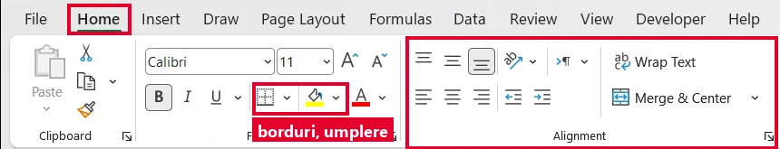</a>
<figcaption>Fila Pornire (Home): butoanele <b>Borders</b> (borduri) și <b>Fill Color</b> (culoare de umplere) sunt în grupul Font; butoanele de aliniere sunt în grupul <b>Aliniere (Alignment)</b>.</figcaption></figure>
<figure class="captura"><a href="../excel-viii/img/stiluri-celula.webp" target="_blank">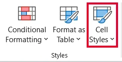</a>
<figcaption>Tot pe Pornire (Home), în grupul Stiluri (Styles): <b>Stiluri de celule (Cell Styles)</b>, stilurile predefinite.</figcaption></figure>
<figure class="captura"><a href="../excel-viii/img/tabel-formatat.webp" target="_blank">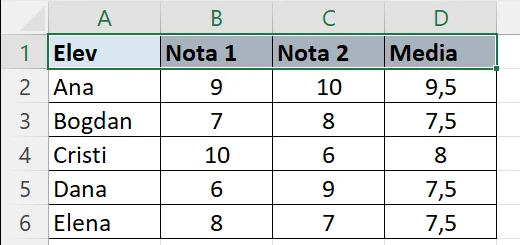</a>
<figcaption>Rezultatul: umplere și aldin pe capul de tabel, borduri pe tot tabelul, note centrate.</figcaption></figure>
<p>Liniile gri ale grilei, de obicei, nu se tipăresc. Bordurile se tipăresc.</p>`,
qs:[
 {t:'choice',q:'Tabelul trebuie să aibă linii când îl tipărești. Ce aplici?',o:['Borduri','Culoare de umplere','Aldin','O coloană mai lată'],ok:0,why:'Grila gri nu se tipărește de obicei. Bordurile se tipăresc.'},
 {t:'formatare',q:'Formatează tabelul brut: <strong>culoare de umplere</strong> doar pe capul de tabel (A1:C1), <strong>aliniere la centru</strong> doar pentru note (B2:C4) și <strong>borduri</strong> pe tot tabelul (A1:C4).',
  cells:{A1:'Elev',B1:'Nota 1',C1:'Nota 2',A2:'Ana',B2:9,C2:10,A3:'Bogdan',B3:7,C3:8,A4:'Cristi',B4:10,C4:6},
  cols:3,rows:4,targets:{umplere:'A1:C1',centru:'B2:C4',borduri:'A1:C4'},
  why:'Fiecare formatare are zona ei. De aceea selecția vine întâi: butonul lucrează doar pe ce ai selectat.'},
 {t:'choice',q:'Numele elevilor nu încap în coloana A. Care e gestul cel mai rapid?',o:['Dublu-clic pe marginea din dreapta literei A','Dublu-clic pe celula A1, cea cu primul nume','Scurtezi numele până încap în coloană','Clic pe numărul rândului 1 din stânga foii'],ok:0,why:'Dublu-clicul pe marginea coloanei îi potrivește lățimea după cel mai lung conținut.'},
 {t:'classify',q:'Formatare de rând sau coloană, ori formatare de celule?',cats:['Rând sau coloană','Celule'],items:[['Lățimea coloanei B',0],['Înălțimea rândului 1',0],['Borduri în jurul tabelului',1],['Notele centrate',1],['Fundal galben în capul de tabel',1]],why:'Lățimea și înălțimea privesc coloane și rânduri întregi. Alinierea, bordurile și umplerea se pun pe celulele selectate.'},
 {t:'match',q:'Potrivește formatarea cu efectul ei.',pairs:[['Aliniere','Unde stă conținutul în celulă'],['Bordură','Linie în jurul celulei, care se tipărește'],['Culoare de umplere','Fundalul celulei'],['Stil predefinit','Formatare gata făcută, aplicată dintr-un clic']],why:'Stilul predefinit adună mai multe formatări într-una singură, gata pregătită.'}
]},
{t:'Formule',lectii:[7],continuturi:[P.formule],text:`
<p>O <mark>formulă</mark> începe <strong>întotdeauna</strong> cu semnul <code>=</code>. Folosește operatorii <code>+</code> <code>-</code> <code>*</code> <code>/</code> (înmulțirea e steluța, împărțirea e bara) și <strong>adresele celulelor</strong>: <code>=B2*C2</code>, nu <code>=3*5</code>.</p>
<p>De ce adrese? Când schimbi un număr din tabel, rezultatul <strong>se recalculează singur</strong>.</p>
<p>Ordinea operațiilor e cea de la matematică: întâi <code>*</code> și <code>/</code>, apoi <code>+</code> și <code>-</code>. Parantezele schimbă ordinea.</p>
<p>În celulă vezi <strong>rezultatul</strong>, iar formula o vezi în <strong>bara de formule</strong> (<em>fx</em>).</p>
<p>Pătrățelul din colțul celulei selectate e <mark>mânerul de umplere</mark>. Dacă îl tragi în jos, formula se copiază, iar adresele coboară și ele: <code>=B2*C2</code> devine <code>=B3*C3</code>.</p>
<figure class="captura"><a href="../excel-viii/img/formula-maner.webp" target="_blank">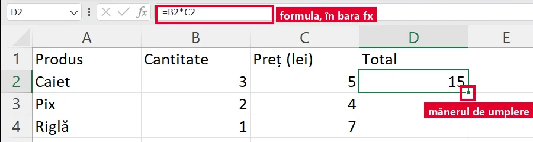</a>
<figcaption>În celulă vezi rezultatul, <b>15</b>; formula <code>=B2*C2</code> o vezi în bara <em>fx</em>. Pătrățelul verde din colț e mânerul de umplere.</figcaption></figure>
<figure class="captura"><a href="../excel-viii/img/formula-copiata.webp" target="_blank">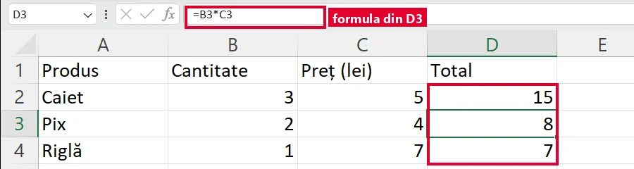</a>
<figcaption>După ce am tras mânerul până în D4: în D3 formula a devenit <code>=B3*C3</code>.</figcaption></figure>`,
qs:[
 {t:'choice',q:'Cantitatea e în B2, prețul în C2. Ce scrii în D2 pentru total?',o:['B2*C2','=B2*C2','=B2xC2','=3*5'],ok:1,why:'Fără = Excel vede text. „x” nu e operator. Cu numere scrise de mână, rezultatul nu se mai recalculează.'},
 {t:'choice',q:'Ce rezultat dă <code>=2+3*4</code>?',o:['20','14','24','9'],ok:1,why:'Întâi 3*4 = 12, apoi 2+12 = 14.'},
 {t:'choice',q:'Copiezi <code>=B2*C2</code> din D2 în D3, cu mânerul de umplere. Ce formulă apare în D3?<figure class="captura"><a href="../excel-viii/img/formula-maner.webp" target="_blank"></a><figcaption>Celula D2 și <b>mânerul de umplere</b> din colțul ei de jos-dreapta.</figcaption></figure>',o:['=B2*C2','=B3*C3','=B2*C3','=C3*D3'],ok:1,why:'Formula coboară un rând, deci și adresele coboară un rând.'},
 {t:'foaie',q:'Completează coloana Total (D2, D3, D4) și totalul general din D5. Apasă pe o celulă cu chenar, scrie formula în bara fx, apoi Enter.',
  cells:{A1:'Produs',B1:'Cantitate',C1:'Preț (lei)',D1:'Total',A2:'Caiet',B2:3,C2:5,A3:'Pix',B3:2,C3:4,A4:'Riglă',B4:1,C4:7,A5:'Total general'},
  cols:4,rows:5,targets:{D2:'=B2*C2',D3:'=B3*C3',D4:'=B4*C4',D5:'=D2+D3+D4'},
  why:'Formulele folosesc adrese, deci se recalculează dacă se schimbă prețurile.'}
]},
{t:'Funcții și decizie',lectii:[8,9],continuturi:[P.functii],text:`
<p>O <mark>funcție</mark> e o formulă gata făcută: <code>SUM</code> (suma), <code>AVERAGE</code> (media aritmetică), <code>MAX</code> (cea mai mare valoare), <code>MIN</code> (cea mai mică). Între paranteze pui zona: <code>=AVERAGE(B2:B6)</code>.</p>
<p>Și în Excel-ul în limba română, numele funcțiilor sunt <strong>în engleză</strong>. <code>=SUMA(B2:B6)</code> dă eroare.</p>
<figure class="captura"><a href="../excel-viii/img/functie-average.webp" target="_blank">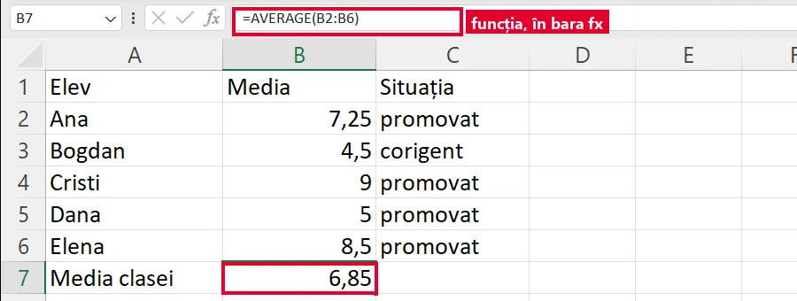</a>
<figcaption>Celula B7 arată <b>6,85</b>; în bara <em>fx</em> se vede funcția <code>=AVERAGE(B2:B6)</code>.</figcaption></figure>
<p>Funcția de <mark>decizie</mark>, <code>IF</code>, alege între două rezultate: <code>=IF(B2&gt;=5;"promovat";"corigent")</code>. Citești: <em>dacă</em> B2 e cel puțin 5, scrie „promovat”, <em>altfel</em> „corigent”. Textul stă între ghilimele.</p>
<p>Comparații: <code>&gt;</code> <code>&lt;</code> <code>&gt;=</code> <code>&lt;=</code> <code>=</code>, iar <code>&lt;&gt;</code> înseamnă diferit. Între părțile lui IF pui <code>;</code> sau <code>,</code>, după setările calculatorului.</p>
<figure class="captura"><a href="../excel-viii/img/functie-if.webp" target="_blank">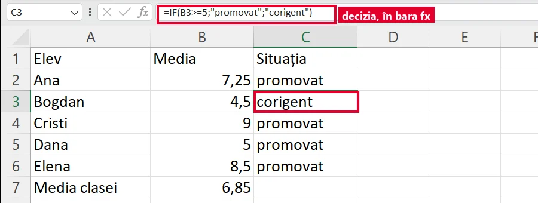</a>
<figcaption>Media lui Bogdan e 4,5, deci IF scrie <b>corigent</b>. Pe acest calculator, părțile lui IF sunt despărțite cu <code>;</code>. Dana are exact 5: promovat.</figcaption></figure>
<p>Verifică decizia și cu o valoare fix la limită, de exemplu media 5.</p>`,
qs:[
 {t:'choice',q:'Ce funcție găsește cea mai mare notă din zona B2:B20?',o:['SUM','AVERAGE','MAX','MIN'],ok:2,why:'MAX = maximul, adică cea mai mare valoare.'},
 {t:'choice',q:'În B2:B4 sunt notele 6, 8 și 10. Ce afișează <code>=AVERAGE(B2:B4)</code>?',o:['24','8','10','3'],ok:1,why:'(6 + 8 + 10) : 3 = 8.'},
 {t:'tf',q:'În Excel-ul în limba română, suma se scrie <code>=SUMA(B2:B6)</code>.',ok:false,why:'Fals. Numele funcțiilor rămân în engleză: =SUM(B2:B6).'},
 {t:'foaie',q:'Situația școlară la informatică: calculează media clasei (B7), nota maximă (B8) și nota minimă (B9), cu funcții.',
  cells:{A1:'Elev',B1:'Nota',A2:'Ana',B2:9,A3:'Bogdan',B3:7,A4:'Cristi',B4:10,A5:'Dana',B5:6,A6:'Elena',B6:8,A7:'Media',A8:'Nota maximă',A9:'Nota minimă'},
  cols:2,rows:9,targets:{B7:'=AVERAGE(B2:B6)',B8:'=MAX(B2:B6)',B9:'=MIN(B2:B6)'},
  why:'AVERAGE, MAX și MIN pe aceeași zonă, B2:B6.'},
 {t:'choice',q:'B2 conține 4,50. Ce afișează <code>=IF(B2&gt;=5;"promovat";"corigent")</code>?',o:['promovat','corigent','4,50','nimic'],ok:1,why:'4,50 nu e ≥ 5, deci IF alege a doua variantă.'},
 {t:'foaie',q:'Scrie în C2 și C3 situația fiecărui elev, cu IF: „promovat” de la media 5 în sus, altfel „corigent”.',
  cells:{A1:'Elev',B1:'Media',C1:'Situația',A2:'Ana',B2:7.25,A3:'Bogdan',B3:4.5},
  cols:3,rows:3,targets:{C2:'=IF(B2>=5;"promovat";"corigent")',C3:'=IF(B3>=5;"promovat";"corigent")'},
  variants:[{B2:4,B3:9},{B2:5,B3:4.99}],
  why:'Formula verifică media din celulă, deci merge și după ce se schimbă notele. Jocul a testat-o și cu media 5 fix.'}
]},
{t:'Sortare după mai multe criterii',lectii:[10],continuturi:[P.sortare],text:`
<p><mark>Sortarea</mark> aranjează rândurile unui tabel <strong>crescător</strong> (A→Z, 1→10) sau <strong>descrescător</strong> (Z→A, 10→1).</p>
<p>Faci clic într-o celulă a tabelului, apoi fila <strong>Date</strong> (Data) → <strong>Sortare</strong> (Sort). Capul de tabel trebuie să rămână sus. Dacă a coborât printre date, anulezi cu <kbd>Ctrl</kbd>+<kbd>Z</kbd>.</p>
<p>Pentru <mark>mai multe criterii</mark>, în fereastra de sortare adaugi un nivel (<em>Adăugare nivel</em>, în engleză <em>Add Level</em>). De exemplu: întâi după clasă, A→Z, apoi după notă, descrescător. Al doilea criteriu ordonează doar rândurile care au aceeași clasă.</p>
<figure class="captura"><a href="../excel-viii/img/sortare-doua-criterii.webp" target="_blank">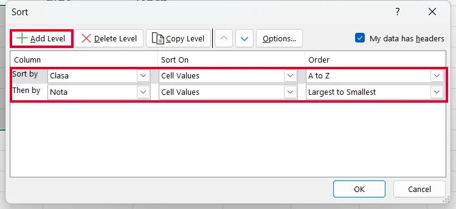</a>
<figcaption>Fereastra Sortare (Sort). Întâi după Clasa, <i>de la A la Z (A to Z)</i>, apoi după Nota, <i>de la cel mai mare la cel mai mic (Largest to Smallest)</i>, adică descrescător. Butonul <b>Adăugare nivel (Add Level)</b> a adăugat al doilea rând.</figcaption></figure>
<figure class="captura"><a href="../excel-viii/img/tabel-sortat.webp" target="_blank">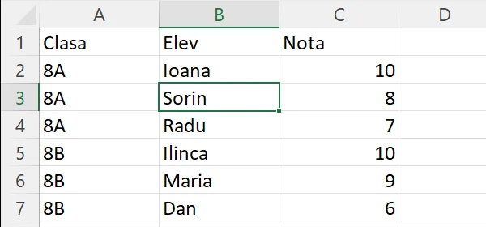</a>
<figcaption>Rezultatul: întâi toată clasa 8A, apoi 8B; în fiecare clasă, nota mai mare e prima.</figcaption></figure>
<p><strong>Nu sorta o singură coloană.</strong> Rândurile se desperechează: notele ajung la alți elevi. Suma notelor rămâne aceeași, deci nu observi ușor.</p>`,
qs:[
 {t:'choice',q:'Vrei clasamentul clasei, cu cea mai mare medie sus. Ce ordine alegi pentru coloana Media?',o:['Descrescătoare','Crescătoare','Alfabetică','Nu contează'],ok:0,why:'Descrescător înseamnă de la cea mai mare valoare la cea mai mică.'},
 {t:'order',q:'Tabelul e sortat întâi după Clasa (A→Z), apoi după Nota (descrescător). Pune rândurile în ordinea rezultată.',items:['8A · Ioana · 10','8A · Radu · 7','8B · Maria · 9','8B · Dan · 6'],why:'Întâi toate rândurile din 8A, apoi din 8B. În fiecare clasă, nota mai mare vine prima.'},
 {t:'order',q:'Faci sortarea după două criterii. Pune pașii în ordine.',items:['Faci clic într-o celulă a tabelului','Deschizi fila Date → Sortare','Alegi primul criteriu: Clasa, A→Z','Adaugi un nivel: Nota, descrescător','Apeși OK'],why:'Primul criteriu decide grupele mari. Nivelul adăugat ordonează în interiorul fiecărei grupe.'},
 {t:'choice',q:'Doi elevi au aceeași medie, 9. Cum stabilești cine apare primul?',o:['Adaugi un al doilea criteriu, de exemplu numele','Sortezi încă o dată doar coloana Media','Îi muți la întâmplare cu mouse-ul','Ștergi rândul unuia dintre ei'],ok:0,why:'Al doilea criteriu contează exact la valorile egale ale primului.'},
 {t:'tf',q:'Poți sorta doar coloana Nota: numele rămân lângă notele lor.',ok:false,why:'Fals. Dacă sortezi o singură coloană, notele se mută, iar numele rămân pe loc. Rândurile se desperechează.'}
]},
{t:'Experimentul cu plante',lectii:[11,12],continuturi:[P.grafice,P.serii,P.formule,P.functii],final:true,text:`
<p>Un <mark>grafic</mark> face datele ușor de înțeles. Alegi tipul după întrebare și după cine îl privește:</p>
<ul>
<li><strong>coloane</strong> → <strong>compari</strong> valori;</li>
<li><strong>linie</strong> → urmărești o <strong>evoluție în timp</strong>;</li>
<li><strong>radial</strong> (plăcinta) → <strong>părți dintr-un întreg</strong>.</li>
</ul>
<p>O <mark>serie de date</mark> e un șir de valori care merg împreună, de obicei un rând sau o coloană din tabel: de exemplu înălțimile unei plante, săptămână de săptămână. Fiecare serie primește o culoare și un nume în <strong>legendă</strong>.</p>
<p>Selectezi datele <strong>cu tot cu etichete</strong>, apoi fila <strong>Inserare</strong> (Insert) → tipul de grafic, din grupul <strong>Diagrame</strong> (Charts). Adaugi un titlu.</p>
<figure class="captura"><a href="../excel-viii/img/inserare-diagrame.webp" target="_blank">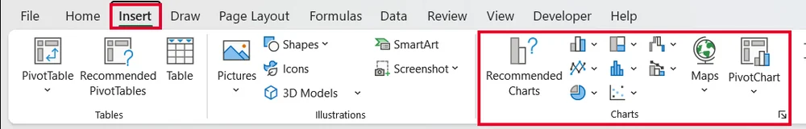</a>
<figcaption>Fila Inserare (Insert), grupul <b>Diagrame (Charts)</b>: aici alegi coloane, linie, radial și celelalte tipuri.</figcaption></figure>
<figure class="captura"><a href="../excel-viii/img/grafic-plante.webp" target="_blank">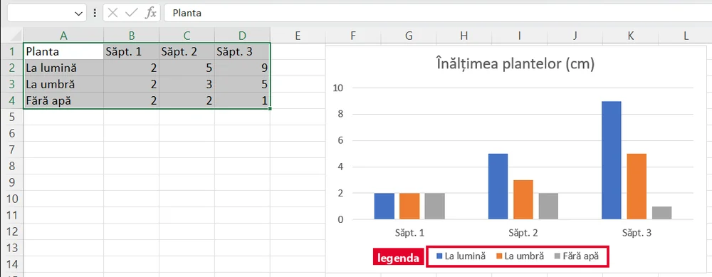</a>
<figcaption>Datele selectate cu tot cu etichete (A1:D4) și graficul cu coloane. Fiecare plantă e o serie, cu culoarea și numele ei în <b>legendă</b>.</figcaption></figure>
<p><strong>Misiunea finală:</strong> trei plante, la lumină, la umbră și fără apă, măsurate trei săptămâni.</p>`,
qs:[
 {t:'choice',q:'Vrei să arăți cum a crescut o plantă de la o săptămână la alta. Ce grafic alegi?',o:['Coloane','Linie','Radial','Niciunul'],ok:1,why:'Evoluția în timp se vede cel mai bine pe o linie.'},
 {t:'choice',q:'Ce grafic arată cel mai bine ce parte din clasă a ales fiecare sport?',o:['Linie','Coloane','Radial','Tabel'],ok:2,why:'Radialul (plăcinta) arată părțile unui întreg.'},
 {t:'pick',q:'Selectează seria de date a plantei „La umbră”: doar valorile ei din cele trei săptămâni.',cols:4,rows:4,range:true,
  cells:{A1:'Planta',B1:'Săpt. 1',C1:'Săpt. 2',D1:'Săpt. 3',A2:'La lumină',B2:2,C2:5,D2:9,A3:'La umbră',B3:2,C3:3,D3:5,A4:'Fără apă',B4:2,C4:2,D4:1},
  ans:'B3:D3',why:'Seria plantei „La umbră” e rândul ei de valori, B3:D3. Numele din A3 devine numele seriei în legendă.'},
 {t:'choice',q:'Faci un grafic linie cu cele trei plante, câte o serie pentru fiecare. Câte nume apar în legendă?',o:['3','9','1','4'],ok:0,why:'Fiecare serie are un nume în legendă: 3 plante, 3 serii, 3 nume.'},
 {t:'foaie',q:'Calculează creșterea fiecărei plante (E2:E4 = săptămâna 3 minus săptămâna 1) și creșterea maximă în E5.',
  cells:{A1:'Planta',B1:'Săpt. 1',C1:'Săpt. 2',D1:'Săpt. 3',E1:'Creștere (cm)',A2:'La lumină',B2:2,C2:5,D2:9,A3:'La umbră',B3:2,C3:3,D3:5,A4:'Fără apă',B4:2,C4:2,D4:1,A5:'Creșterea maximă'},
  cols:5,rows:5,targets:{E2:'=D2-B2',E3:'=D3-B3',E4:'=D4-B4',E5:'=MAX(E2:E4)'},
  why:'Planta fără apă a „crescut” cu −1 cm: s-a ofilit. Asta e o concluzie trasă din date.'},
 {t:'choice',q:'Selectezi datele pentru graficul plantelor. Ce incluzi?',o:['Numerele și etichetele lor','Doar numerele, fără etichete','Doar etichetele, fără numere','Tot tabelul și rândurile goale'],ok:0,why:'Din etichete Excel scrie numele seriilor în legendă și categoriile de pe axă.'}
]}
];

JocMotor.porneste({
  cheie:'misiunea_analist_viii',
  titlu:'Misiunea Analist',
  marca:'Misiunea <b>Analist</b>',
  h1:'<span class="eq">=</span>Misiunea Analist',
  clasa:'a VIII-a',
  unitate:'VIII-U1',
  unitateTitlu:'Calcul tabelar',
  competente:['CS.1.1','CS.3.1'],
  lectii:'2–12',
  intro:'Opt niveluri despre Excel: interfața și registrul, selectarea și copierea, tipurile de date, formatarea, formulele, funcțiile și decizia, sortarea și graficele. La fiecare citești o pagină scurtă și răspunzi la întrebări. În foile din joc scrii formule adevărate și formatezi tabele, iar jocul verifică. La final îți iei diploma.',
  banda:'<span>A</span><span>B</span><span>C</span><span>D</span><span>E</span><span>F</span><span>G</span><span>H</span>',
  nivele:LEVELS,
  tipuri:{foaie:JocFoaie,formatare:JocFormatare},
  diploma:{
    titlu:'Analist de date',
    rezumat:'interfață, registre și foi, editare, tipuri de date, formatare, formule, funcții, IF, sortare și grafice',
    aplicatie:'Excel-ul adevărat',
    provocare:[
      'Creează un registru nou și redenumește prima foaie „Plante”. Copiază în ea tabelul plantelor (3 plante × 3 săptămâni).',
      'Calculează creșterea fiecărei plante cu o formulă și creșterea maximă cu MAX.',
      'Adaugă o coloană „Verdict” cu IF: „crește bine” de la 5 cm în sus, altfel „nu crește”.',
      'Sortează tabelul descrescător după creștere, cu toate rândurile odată.',
      'Pune culoare de umplere pe capul de tabel, borduri pe tot tabelul și fă un grafic linie cu titlu.',
      'Salvează ca <code>Nume_Prenume_plante.xlsx</code> în folderul clasei.'
    ]
  }
});
</script>
</body>
</html>
